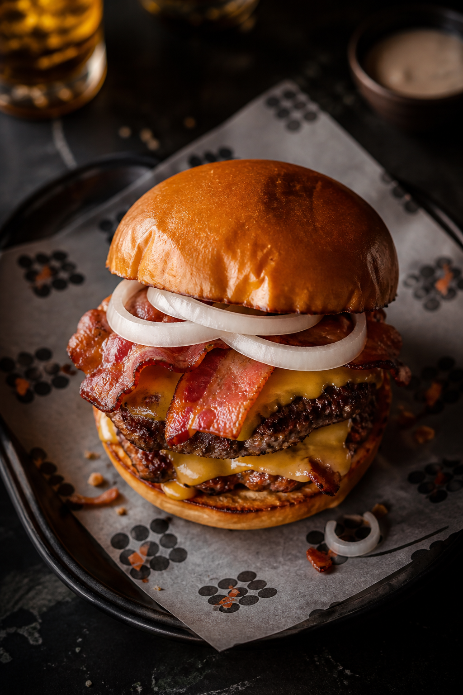
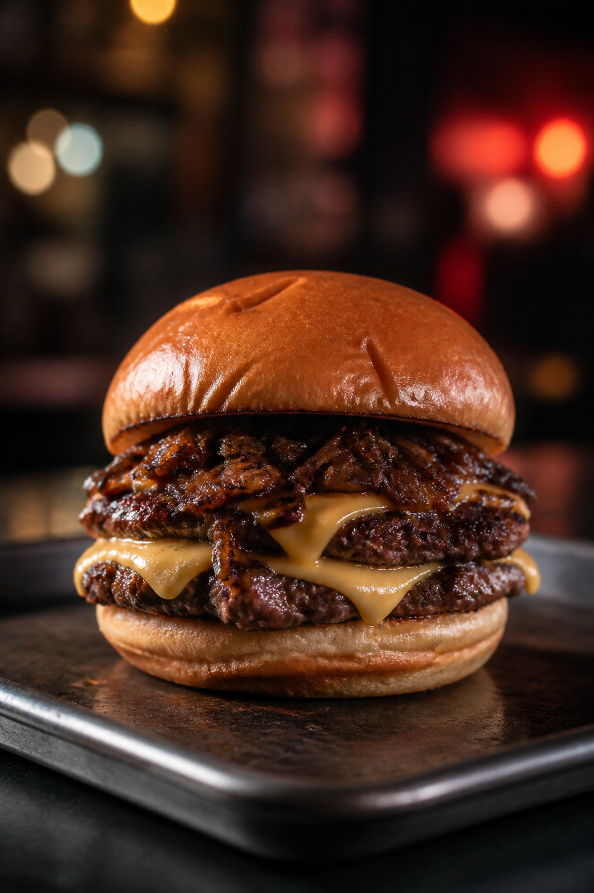
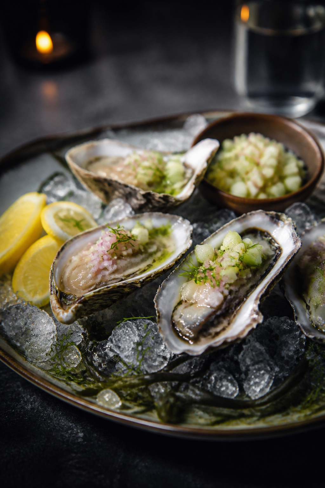

Chapter 03
The Beach
Kozhikode Beach isn't a backdrop.


Salt air. Late crowds. A grill that belongs exactly here — not in a mall, on the beach where the night still moves.

Six chapters. One loop. Kozhikode Beach · 4:30 PM – 3:00 AM.
Lost in Burg exists for the hour when most kitchens go quiet — when the city thins out and the hunger gets honest.
We set up on Kozhikode Beach to serve that hour properly. No reservations. Just show up.

Doors from 4:30 PM to 3:00 AM — every day. Late night has its own tempo. We cook for that tempo.
Salt air. Late crowds. A grill that belongs exactly here — not in a mall, on the beach where the night still moves.
Hot iron. Honest plates. No fluff.

Smash patties on hot iron. Bone marrow when the craving goes deeper. Steaks by the cut. Late-night craft.


Burgers, steaks, coastal starters, pastas, drinks — from the 2026 card. No invented specials.
See the Full Menu
The loop is open tonight
Kozhikode Beach · 4:30 PM – 3:00 AM